Q.106 (120A-62) ★ 正答率 91% 正答率 91% 🚩 済
44歳男性。喘鳴を伴う呼吸困難で夜間救急外来を受診。2年前に気管支喘息診断、吸入ステロイドを自己判断で中止。SpO₂ 89%（room air）。両側全肺野で呼気時wheeze。鼻茸あり。市販解熱薬で喘息悪化のエピソードあり。酸素吸入開始後、次に行うべき治療はどれか。
a NSAID投与
b 副腎皮質ステロイド吸入
c 短時間作用型β₂刺激薬吸入
d 生物学的製剤の皮下投与
e 抗菌薬の静脈内投与
✅ c 短時間作用型β₂刺激薬（SABA）吸入（喘息急性増悪の第一選択）
理解度： ✅ わかった △ 迷った ❌ わからない
🫁 喘息急性増悪の初期治療 SABA（短時間作用型β₂刺激薬） 吸入が第一選択（サルブタモール等）→即効性気管支拡張。次いで全身ステロイド。禁忌 （鼻茸+NSAIDで喘息悪化のエピソード→本例はアスピリン喘息の可能性！）。b：吸入ステロイドは維持療法（急性期に即効性なし）。d：生物学的製剤は重症難治性喘息の追加療法。
🎯 国試ポイント 喘息急性増悪 → SABA吸入が最優先 （全身ステロイドは次のステップ）。鼻茸+NSAIDで増悪歴=アスピリン喘息（NSAID過敏症） を疑う。NSAIDは禁忌。
📋
連問（Q.107〜108） 次の文を読み、107と108の問いに答えよ。 84歳の男性。呼吸困難を主訴に来院した。
Q.107 (120B-41) ★ 📷 画像 正答率 79% 正答率 79% 🚩 済
頸部に認める所見はどれか。
a 気管短縮
b 甲状腺腫
c 正中頸嚢胞
d 頸部蜂窩織炎
e リンパ節腫大
✅ a 気管短縮（tracheal shortening）
理解度： ✅ わかった △ 迷った ❌ わからない
🫁 気管短縮とは 気管短縮 ：COPDの重症例で肺が過膨張→胸郭が上方に持ち上がる→胸骨上縁と甲状軟骨の距離が短縮する（正常では指3横指、COPDでは指1〜2横指以下）。写真では頸部が短く見え、胸骨上窩から気管を早い段階で触知できる。
🎯 国試ポイント COPDの頸部所見：気管短縮 ・胸鎖乳突筋肥大（補助呼吸筋使用）。気管短縮は肺過膨張の体格的反映。甲状腺腫・リンパ節腫大は別疾患。
Q.108 (120B-42) ★ 📷 画像 正答率 94% 正答率 94% 🚩 済
次に検査所見を示す。白血球16,460（好中球89%）、CRP 10.1mg/dL。ABG（room air）：pH 7.45、PaCO₂ 38、PaO₂ 54、HCO₃⁻ 24mEq/L。D-dimer 0.5μg/mL（基準1.0以下）。胸部X線(C)を示す。適切でないのはどれか。
a 輸液
b 抗菌薬投与
c 気管支拡張薬吸入
d ヘパリン持続点滴
e グルココルチコイド全身投与
理解度： ✅ わかった △ 迷った ❌ わからない
🫁 各選択肢の評価 a：輸液→脱水補正で適切。b：白血球↑・CRP↑・黄色痰→細菌性感染→抗菌薬適切 。c：COPD急性増悪→気管支拡張薬適切 。e：ステロイド全身→COPD急性増悪の標準治療 。D-dimer 0.5（正常） →肺塞栓の根拠なし→ヘパリン不要・不適切 。
Q.109 (120D-34) ★ 📷 画像 正答率 97% 正答率 97% 🚩 済
57歳女性。口腔内白色病変を主訴に来院。口蓋垂周辺が点状に白く、綿棒でこすると剥離可能。咽頭痛・発熱なし。2年前から気管支喘息のため副腎皮質ステロイド吸入薬を使用中。最も考えられるのはどれか。
a 白板症
b 扁平苔癬
c 単純ヘルペス
d アフタ性口内炎
e 口腔カンジダ症
✅ e 口腔カンジダ症（ICS使用による免疫抑制→Candida増殖）
理解度： ✅ わかった △ 迷った ❌ わからない
🫁 診断のポイント 吸入ステロイド（ICS）使用中 → 口腔内局所免疫抑制 → Candida albicansの過成長 。白色偽膜が形成され、綿棒でこすると剥離可能 （他疾患との鑑別点）。咽頭痛・発熱なし。
🎯 国試ポイント ICS使用時の口腔カンジダ症は代表的な副作用 。予防：吸入後にうがいをする（口腔内ステロイドを洗い流す）。治療：アゾール系抗真菌薬（フルコナゾール） またはナイスタチンうがい液 。白板症・扁平苔癬はこすっても取れない。
Q.110 (120E-15) ★ 正答率 99% 正答率 99% 🚩 済
喫煙と発症の因果関係が強いのはどれか。
a 胸膜プラーク
b サルコイドーシス
c 慢性閉塞性肺疾患
d 急性呼吸窮迫症候群
e ニューモシスチス肺炎
✅ c 慢性閉塞性肺疾患（COPD）—喫煙が最大のリスクファクター
理解度： ✅ わかった △ 迷った ❌ わからない
🎯 国試ポイント COPD = 喫煙病 （日本人喫煙者の15〜20%がCOPD）。Brinkman指数400以上でリスク↑。a：胸膜プラーク=石綿（アスベスト）。b：サルコイドーシス=喫煙者に少ない（逆相関）。d：ARDS=敗血症・外傷等。e：ニューモシスチス=HIV/免疫不全。
📋
連問（Q.111〜113） 次の文を読み、111〜113の問いに答えよ。 80歳の男性。労作時の息切れを主訴に来院した。
Q.111 (120F-61) ★ 正答率 96% 正答率 96% 🚩 済
この患者の呼吸機能で予測されるのはどれか。
a 残気量減少
b 肺拡散能増加
c FEV₁% 70%未満
d 静肺コンプライアンス低下
e 上に凸のflow-volume曲線
理解度： ✅ わかった △ 迷った ❌ わからない
📋 COPDの呼吸機能 指標 方向 理由 FEV₁% < 70% COPDの診断基準（気管支拡張薬後でも） 残気量（RV） ↑増加 空気トラッピング（a誤） 肺拡散能（DLco） ↓低下 肺気腫で肺胞壁破壊（b誤） 静肺コンプライアンス ↑増加 肺胞弾性低下（d誤：低下ではない） Flow-volume曲線 呼気曲線が凹（scoop） scooping pattern（e誤：下に凸）
Q.112 (120F-62) ★ 正答率 82% 正答率 82% 🚩 済
入院でグルココルチコイド点滴・抗菌薬投与を行い症状改善。退院前に開始する治療で適切なのはどれか。
a 抗コリン薬の内服
b グルココルチコイドの内服
c 長時間作用型β₂刺激薬の吸入
d セフェム系薬の少量長期の内服
e ロイコトリエン受容体拮抗薬の内服
✅ c 長時間作用型β₂刺激薬（LABA）の吸入
※ 既往に閉塞隅角緑内障あり→LAMA（抗コリン薬）は禁忌→LABAが適切。
理解度： ✅ わかった △ 迷った ❌ わからない
🫁 COPD治療薬選択の注意点 COPD標準維持療法はLAMA（第一選択）またはLABA。閉塞隅角緑内障 が既往にあるため：LAMA（抗コリン薬）→ 眼圧上昇→ 閉塞隅角緑内障の禁忌！ LABA→ 緑内障に影響なし→ 適切 Q.113 (120F-63) ★ 正答率 93% 正答率 93% 🚩 済
外来で「最近つまずきやすくなり、物覚えが悪くなった」と相談。高齢者機能評価簡易版（CGA7）を用いて評価を行うことになった。評価のための質問で適切でないのはどれか。
a 「自分が無力だと思いますか」
b 「会話が聴き取りにくいことはありますか」
c 「これから言う言葉を繰り返してください」
d 「お風呂でひとりで体を洗うことができますか」
e 「トイレで失敗してしまうことはありませんか」
✅ b 「会話が聴き取りにくいことはありますか」（CGA7に含まれない—聴力評価は別途audiometry）
理解度： ✅ わかった △ 迷った ❌ わからない
📋 CGA7（高齢者総合機能評価簡易版）の内容 a：気分・抑うつ評価 （GDS由来）✓認知機能評価 （語句の即時再生）✓ADL評価 （入浴・整容）✓排尿機能評価 （尿失禁）✓聴力評価 → CGA7に含まれない（聴力は別途聴力検査または音叉で評価）
Q.114 (119A-72) ★ 2択 正答率 83% 正答率 83% 🚩 済
64歳男性。COPD（抗コリン薬吸入中）。%VC 85%、FEV₁% 50%。6分間歩行でSpO₂最低92%（room air）。ABG正常。適切な対応はどれか。2つ選べ。
a 抗菌薬の投与
b 免疫抑制薬の投与
c 呼吸リハビリテーション
d ネーザルハイフロー療法
e 長時間作用性β₂刺激薬吸入の追加
✅ c 呼吸リハビリテーション ＋ e LABA吸入の追加（LAMA+LABA併用療法）
理解度： ✅ わかった △ 迷った ❌ わからない
📋 COPD安定期管理 既にLAMA使用中→LABA追加（LAMA+LABA併用） で気管支拡張効果の相乗。呼吸リハビリ は労作時呼吸困難・QOL改善にエビデンスA。ネーザルハイフロー（d）はII型呼吸不全の急性期管理向け（安定期ではない）。
Q.115 (119D-45) ★ 正答率 64% 正答率 64% 🚩 済
48歳女性、緊張型頭痛。鼻茸あり、気管支喘息。2年前に鎮痛薬内服で重篤な喘息発作→気管挿管歴あり。好酸球増多。現在は定期通院なし。この患者の頭痛でまず投与すべき薬剤はどれか。
a 塩酸モルヒネ
b インドメタシン
c メトトレキサート
d アセトアミノフェン
e グルココルチコイド
✅ d アセトアミノフェン（COX非依存性→アスピリン喘息患者に安全）
理解度： ✅ わかった △ 迷った ❌ わからない
🫁 アスピリン喘息（NSAIDs過敏症） アスピリン喘息 ：NSAIDs（特にCOX-1阻害作用の強い酸性薬剤）がアラキドン酸代謝をLT産生側に偏らせる→気管支収縮→喘息発作。禁忌 ：インドメタシン（b）・アスピリン・ロキソプロフェン等の酸性NSAIDs安全 ：アセトアミノフェン（パラセタモール） （COX非依存性→安全）
💡 三主徴（サンパー徴候） 鼻茸（鼻ポリープ） ＋喘息 ＋NSAIDs過敏症 →アスピリン喘息を強く示唆。好酸球増多も特徴。
📋
連問（Q.116〜117） 次の文を読み、116と117の問いに答えよ。 75歳女性。呼吸困難を主訴に救急車で搬入された。
Q.116 (119E-47) ★ 正答率 96% 正答率 96% 🚩 済
この患者の前腕から静脈投与を行う。静脈留置針の自己抜去を防ぐための対応で適切なのはどれか。
a 薬剤は持続点滴で投与する
b 両上肢を抑制帯で固定する
c できるだけ太い留置針を用いる
d 夜間も患者周囲の照明をできるだけ明るくする
e 患者から見えないように寝衣の袖の中に点滴ルートを通す
✅ e 寝衣の袖の中に点滴ルートを通す（視覚的刺激を取り除いて自己抜去を予防）
理解度： ✅ わかった △ 迷った ❌ わからない
🎯 国試ポイント 認知症患者の自己抜去対策：ルートを見えにくくする （袖や包帯で隠す）が有効かつ倫理的。b：身体拘束は最終手段（倫理的問題＋せん妄を悪化させる）。d：夜間に明るくすると睡眠障害→認知症悪化→せん妄↑→逆効果。
Q.117 (119E-48) ★ 正答率 87% 正答率 87% 🚩 済
β₂刺激薬の吸入を行ったが呼吸困難と喘鳴が改善しない。次に静脈内投与すべき薬剤はどれか。
a アトロピン
b ジアゼパム
c フロセミド
d アドレナリン
e グルココルチコイド
理解度： ✅ わかった △ 迷った ❌ わからない
🫁 喘息急性増悪の治療ステップ ①SABA吸入 （第一選択）→ 改善不十分なら②グルコルチコイド全身投与（静注または内服） + SABA反復吸入 + 酸素。 Q.118 (118B-12) ★ 📷 画像 正答率 80% 正答率 80% 🚩 済
胸部の模式図（①〜⑤）を示す。慢性閉塞性肺疾患（COPD）の重症例にみられる心尖拍動はどこか。
a ① / b ② / c ③ / d ④ / e ⑤
✅ e ⑤（剣状突起下：epigastric area）
理解度： ✅ わかった △ 迷った ❌ わからない
🫁 COPD重症例の心臓変化 肺過膨張 →横隔膜低下・胸郭拡張→心臓が垂直化・下降（滴状心：teardrop heart ）→心尖拍動が通常の位置（第5肋間鎖骨中線上）から剣状突起下（心窩部） へ移動。打診・触診でも心臓の垂直化を確認できる。
🎯 国試ポイント COPD胸部X線3大所見：横隔膜平低化・肺野過膨張・滴状心 。心尖拍動は剣状突起下（⑤）→これはCOPD重症の典型的所見。
Q.119 (118C-34) ★ 3択 正答率 73% 正答率 73% 🚩 済
笛音（wheezes）の原因となるのはどれか。3つ選べ。
a 気胸
b 無気肺
c 左心不全
d 気管支喘息
e 慢性閉塞性肺疾患
✅ c 左心不全 ＋ d 気管支喘息 ＋ e COPD
理解度： ✅ わかった △ 迷った ❌ わからない
📋 wheezesの原因 原因 機序 気管支喘息（d） 気道平滑筋収縮→気道狭窄→笛声音 COPD（e） 気道閉塞（気管支炎成分）→wheeze 左心不全（c） 心臓喘息（cardiac asthma）：肺水腫→気道浮腫・分泌物→wheeze 気胸（a） →呼吸音消失・鼓音（wheezesではない） 無気肺（b） →呼吸音減弱・dull（wheezesではない）
🎯 国試ポイント 左心不全（cardiac asthma） でもwheezesを聴取する→喘息との鑑別が重要（BNP・心エコーで鑑別）。
Q.120 (118D-50) ★ 正答率 82% 正答率 82% 🚩 済
30歳女性。夜間の息苦しさ・咳嗽（半年前から）。1年前からネコ飼育。β₂刺激薬吸入前後の呼吸機能：FEV₁ 2.12→2.66L（吸入後改善量+540mL）、FEV₁% 68→72%。診断はどれか。
a 過敏性肺炎
b 気管支喘息
c 慢性気管支炎
d うっ血性心不全
e 睡眠時無呼吸症候群
理解度： ✅ わかった △ 迷った ❌ わからない
🫁 気道可逆性試験の判定 気管支拡張薬吸入後のFEV₁改善：0.54L（540mL）≥200mL ✓25.5%≥12% ✓気道可逆性陽性 →気管支喘息の診断基準を満たす
💡 喘息の3大特徴 ①可逆性気道閉塞 （β₂刺激薬で改善）②気道過敏性亢進 ③気道炎症 。夜間症状・ネコ（アレルゲン）・吸入後改善→典型的。
Q.121 (118E-14) ★ 正答率 52% 正答率 52% 🚩 済
主に湿性咳嗽 をきたす疾患はどれか。
a 咳喘息
b 間質性肺炎
c 感染後咳嗽
d 胃食道逆流症
e 副鼻腔気管支症候群
✅ e 副鼻腔気管支症候群（SBS）—後鼻漏＋気管支炎→湿性咳嗽＋膿性痰
理解度： ✅ わかった △ 迷った ❌ わからない
📋 咳嗽の性状と疾患 疾患 咳の性状 特徴 咳喘息 乾性 夜間・早朝悪化、気道過敏性↑ 間質性肺炎 乾性 fine crackles、安静時でも 感染後咳嗽 乾性〜湿性 感冒後8週間以上 GERD 乾性 食後・横臥位で悪化 副鼻腔気管支症候群（SBS） 湿性 後鼻漏＋気管支炎→膿性痰→マクロライド有効
Q.122 (118F-37) ★ 📷 画像 正答率 90% 正答率 90% 🚩 済
4歳女児。喘鳴を繰り返している。脈拍140/分、呼吸数48/分。SpO₂ 93%（room air）。陥没呼吸あり。肺の過膨張。この患者でみられるのはどれか。
a 嗄声
b 呼気延長
c 犬吠様咳嗽
d 無呼吸発作
e レプリーゼ
理解度： ✅ わかった △ 迷った ❌ わからない
📋 鑑別：小児の喘鳴疾患 疾患 特徴的症状 年齢 気管支喘息 呼気延長・wheeze・陥没呼吸 全年齢（本例） クループ症候群 嗄声・犬吠様咳嗽・吸気性喘鳴 生後6か月〜3歳 百日咳 レプリーゼ（吸気性ウー音）・笑い声様咳 乳幼児 RSウイルス感染症 無呼吸発作・喘鳴 2歳以下
Q.123 (118F-52) ★ 2択 正答率 76% 正答率 76% 🚩 済
43歳男性、小児期から風邪をひきやすく20歳台から咳・痰増加。2年前から膿性痰が1日中持続。喫煙歴なし。両側下胸部coarse crackles。CT：びまん性小葉中心性粒状影 。診断はどれか。
a 肺気腫
b 粟粒結核
c 気管支拡張症
d 慢性気管支炎
e びまん性汎細気管支炎
理解度： ✅ わかった △ 迷った ❌ わからない
🫁 DPBの診断ポイント DPB（Diffuse Panbronchiolitis） ：日本人（HLA-B54関連）に多い。CT上びまん性小葉中心性粒状影（centrilobular nodules） が特徴的。慢性副鼻腔炎合併が多い（ただし本例に記載なし）。慢性膿性痰・coarse crackles。
🎯 DPBの治療 14員環マクロライド少量長期投与（エリスロマイシン・クラリスロマイシン） が劇的に有効（抗炎症・抗菌・粘液分泌抑制）。予後改善効果も証明済み。気管支拡張症も鑑別だが、CTでの小葉中心性粒状影はDPBの特徴。
Q.124 (116D-40) ★ 3択 正答率 79% 正答率 79% 🚩 済
53歳男性。2歳から気管支喘息、コントロール不良で肺炎を繰り返す。抗菌薬に反応不良。入院時：好酸球27%↑、IgE 2,540↑、β-D-グルカン120pg/mL↑、抗アスペルギルス沈降抗体陽性。喀痰培養：Aspergillus fumigatus。この患者への治療として適切なのはどれか。
a シクロスポリン
b セフェム系抗菌薬
c 高用量吸入ステロイド
d 経口副腎皮質ステロイド
e アスペルギルス減感作療法
理解度： ✅ わかった △ 迷った ❌ わからない
🫁 ABPA（アレルギー性気管支肺アスペルギルス症） ABPA診断基準 ：気管支喘息＋好酸球増多＋IgE著明高値＋抗アスペルギルス抗体陽性＋β-D-グルカン陽性＋Aspergillus検出。治療 ：経口プレドニゾロン （第一選択）± イトラコナゾール（抗真菌薬）。ICS単独は不十分。
🎯 国試ポイント ABPA = 喘息 + 好酸球増多 + IgE↑ + Aspergillus → 経口ステロイド 。移動性浸潤影（fleeting shadows）・中枢型気管支拡張症が特徴的。
Q.125 (115B-15) ★ 正答率 67% 正答率 67% 🚩 済
急性咳嗽の原因として頻度が高いのはどれか。
a COPD
b 咳喘息
c 胃食道逆流症
d 副鼻腔気管支症候群
e マイコプラズマ肺炎
理解度： ✅ わかった △ 迷った ❌ わからない
📋 咳嗽の分類と原因 分類 期間 主な原因 急性咳嗽 < 3週間 感冒（最多）・マイコプラズマ・細菌性肺炎・急性気管支炎 亜急性咳嗽 3〜8週間 感染後咳嗽・百日咳・結核 慢性咳嗽（本章の主役） > 8週間 咳喘息・GERD・副鼻腔気管支症候群・COPD・アトピー咳嗽
🎯 国試ポイント a〜dはすべて慢性咳嗽 の原因。急性咳嗽の最多は感冒（普通感冒：ライノウイルス等）。選択肢の中ではeが唯一の急性感染症（急性咳嗽の典型）。
Q.126 (114C-38) ★ 📷 画像 正答率 52% 正答率 52% 🚩 済
68歳男性、COPD（著明な透過性亢進・閉塞性障害）。体重4kg減少。栄養療法の方針として適切でないのはどれか。
a 塩分の過剰摂取を避ける
b 1回の食事摂取量を減らす
c 炭水化物主体の食事にする
d 十分なエネルギー量を摂取する
e 分岐鎖アミノ酸の摂取を心掛ける
✅ c 炭水化物主体の食事にする（CO₂産生↑→CO₂貯留が悪化するため不適）
理解度： ✅ わかった △ 迷った ❌ わからない
🫁 COPDと栄養管理 COPD患者は高異化状態 （呼吸筋仕事量↑）→高エネルギー・高蛋白が必要。炭水化物 ：RQ=1.0（CO₂産生多い）→II型呼吸不全患者では悪化リスク 脂質 ：RQ=0.7（CO₂産生少ない）→COPDに有利 → 脂質の割合を増やすのが基本。
🎯 国試ポイント COPD栄養療法：高エネルギー・高脂質・高蛋白、分食（少量多回） 。炭水化物主体はCO₂産生↑→禁忌に近い。RQ（呼吸商）の概念が重要。
Q.127 (118B-14) 正答率 95% 正答率 95% 🚩 済
飲酒がリスクファクターとならないのはどれか。
a 食道癌
b 認知症
c 骨粗鬆症
d Wernicke脳症
e 慢性閉塞性肺疾患（COPD）
✅ e COPD（飲酒はCOPDのリスクファクターでない；喫煙が主要リスク）
理解度： ✅ わかった △ 迷った ❌ わからない
🎯 国試ポイント COPD のリスク：喫煙（最大） 、大気汚染、職業性粉塵、気道過敏性。飲酒は直接的なリスクでない。a：食道扁平上皮癌は飲酒・喫煙のダブルリスク。d：アルコール多飲→ビタミンB1欠乏→Wernicke脳症（眼球運動障害・失調・意識障害）。
Q.128 (118C-23) 📷 画像 正答率 97% 正答率 97% 🚩 済
健常者と進行したCOPD患者との肺気量分画を示す。残気量はどれか。
理解度： ✅ わかった △ 迷った ❌ わからない
💡 肺気量分画の読み方 上から：IRV（吸気予備量）→ TV（1回換気量）→ ERV（呼気予備量）→ RV（残気量：底部） 。① ）が大きくなる。RV = TLC − VC（スパイロで測定不能・体プレチスモ等が必要）。
📋
連問（Q.129〜130） 次の文を読み、129と130の問いに答えよ。 19歳女性。呼吸困難を主訴に来院。
Q.129 (118E-47) 連問 正答率 98% 正答率 98% 🚩 済
この患者の呼吸困難で正しいのはどれか。
a 座位で悪化する
b 食後に悪化する
c 夕方に悪化する
d 左側臥位で悪化する
e 夜中から明け方に悪化する
✅ e 夜中から明け方に悪化する（喘息の日内変動の特徴）
理解度： ✅ わかった △ 迷った ❌ わからない
🎯 国試ポイント 気管支喘息の特徴的パターン：夜間・早朝に悪化 （気道過敏性が夜間〜朝方に高い；迷走神経優位・コルチゾール低下）。座位（起座呼吸）は心不全で悪化、喘息は座位で楽になる （喘息は臥位でも同様）。
Q.130 (118E-48) 連問 正答率 98% 正答率 98% 🚩 済
救急外来で治療し症状安定し帰宅。翌日の外来受診時に処方すべき薬剤はどれか。
a 利尿薬
b 抗ヒスタミン薬
c マクロライド系抗菌薬
d 吸入長時間作用性抗コリン薬
e 吸入副腎皮質ステロイド/長時間作用性β₂刺激薬配合剤
✅ e ICS/LABA配合剤（喘息の維持療法の中心）
理解度： ✅ わかった △ 迷った ❌ わからない
🎯 国試ポイント 気管支喘息の長期管理薬：ICS（吸入副腎皮質ステロイド）が基盤 。中等症以上はICS+LABA配合剤（フルチカゾン/サルメテロール等）が標準。d：LAMA（チオトロピウム等）はCOPDの第一選択（喘息単独には通常使わない、重症喘息の追加療法）。
Q.131 (117A-11) 正答率 80% 正答率 80% 🚩 済
気管支喘息について正しいのはどれか。
a 喘息死は増加傾向にある
b 喘息増悪はウイルス感染後が最も多い
c 吸入ステロイド薬は喫煙により作用が増強する
d 抗IgE抗体はアトピー型喘息の第一選択薬である
e 急性増悪時には長時間作用性β₂刺激薬が第一選択である
理解度： ✅ わかった △ 迷った ❌ わからない
📋 各選択肢解説 a：日本の喘息死は減少傾向 （ICS普及の成果）。c：喫煙はICSの効果を減弱 させる（ICSに対するステロイド抵抗性↑）。d：抗IgE抗体（オマリズマブ）は重症難治性喘息の追加療法 （第一選択ではない）。e：急性増悪時はSABA（短時間作用性） が第一選択（LABAは急性期に使わない）。b：ウイルス感染（ライノウイルス等）→喘息増悪の最多原因（約50〜80%）。
📋
連問（Q.132〜134） 次の文を読み、132〜134の問いに答えよ。 85歳男性。発熱と呼吸困難を主訴に来院。
Q.132 (117C-72) 連問 📷 画像 正答率 93% 🚩 済
1週間前からの状態変化の要因として考えにくいのはどれか。
a 体重の減少
b 認知機能の低下
c 口腔内の衛生状態不良
d 食事や飲水の際のむせ
e アンジオテンシン変換酵素（ACE）阻害薬の内服
✅ e ACE阻害薬の内服（誤嚥性肺炎の「予防」因子）
理解度： ✅ わかった △ 迷った ❌ わからない
🫁 ACE阻害薬と誤嚥性肺炎 ACE阻害薬の副作用：慢性咳嗽 （ブラジキニン蓄積→気道反射↑）。この咳嗽反射の亢進は逆に誤嚥性肺炎を予防 する（咳で気道内容物を排出）。→ ACE阻害薬内服は急性増悪の原因ではない 。 Q.133 (117C-73) 連問 正答率 81% 🚩 済
呼吸状態の急性増悪に対し、抗菌薬とともに用いる薬剤として適切なのはどれか。
a NSAID
b β₂刺激薬
c アルブミン製剤
d 抗ヒスタミン薬
e テオフィリン薬
✅ b β₂刺激薬（COPD急性増悪の気管支拡張薬として標準治療）
理解度： ✅ わかった △ 迷った ❌ わからない
🎯 国試ポイント COPD急性増悪の3本柱：①気管支拡張薬（β₂刺激薬＋抗コリン薬） ②全身ステロイド ③抗菌薬 （感染誘因時）。テオフィリン（e）は現在第2選択以下（副作用・薬物相互作用多い）。アルブミン（c）は低栄養補正だが急性期主役でない。
Q.134 (117C-74) 連問 正答率 98% 🚩 済
入院3日目、状態改善傾向で酸素も不要となったが、急に呼吸心拍モニターを引きちぎり「今日は仕事に行く」と言い病室から出ようとした（→入院中のせん妄）。対応で誤っているのはどれか。
a 脱水を避ける
b 早期離床を促す
c 日中の覚醒を保つ
d 呼吸心拍モニターを終了する
e 夜間はベンゾジアゼピン系睡眠薬を用いる
✅ e 夜間はベンゾジアゼピン系睡眠薬を用いる（せん妄を悪化させる→禁忌）
理解度： ✅ わかった △ 迷った ❌ わからない
🫁 入院中のせん妄（delirium）対策 せん妄の非薬物療法 ：早期離床・日中覚醒保持・脱水避ける・不要なカテーテル・ラインの抜去（d：改善後モニター終了は正しい）。ベンゾジアゼピン系（e） ：GABA受容体作動性→認知機能↓→せん妄を悪化・遷延 させる（禁忌）。せん妄への薬物療法はハロペリドール（non-BZ系抗精神病薬） が使用される。
📋
連問（Q.135〜137） 次の文を読み、135〜137の問いに答えよ。 75歳男性。COPD急性増悪。
Q.135 (117F-62) 連問 正答率 91% 正答率 91% 🚩 済
この患者で正しいのはどれか。
a Ⅱ型呼吸不全
b 呼気時間短縮
c 吸気性呼吸困難
d PaO₂/FIO₂ ＜200
e 呼吸性アルカローシス
理解度： ✅ わかった △ 迷った ❌ わからない
🫁 ABG解析 PaCO₂ 54（>45）= CO₂貯留、PaO₂ 56（<60）= 低酸素血症 → II型呼吸不全 。pH 7.41は正常（HCO₃⁻ 33.1で慢性代償）。呼気延長 （閉塞性）。c：呼気性呼吸困難 （呼気時に気道閉塞）。d：P/F = 56/0.21 = 267（>200、ARDSレベルではない）。e：呼吸性アシドーシス （PaCO₂高い）。
Q.136 (117F-63) 連問 正答率 94% 正答率 94% 🚩 済
対応で誤っているのはどれか。
a 酸素投与
b 抗菌薬投与
c 副腎皮質ステロイド投与
d 短時間作用性β₂刺激薬吸入
e ヒスタミンH1受容体拮抗薬投与
✅ e ヒスタミンH1受容体拮抗薬投与（COPD急性増悪に適応なし）
理解度： ✅ わかった △ 迷った ❌ わからない
🎯 国試ポイント COPD急性増悪の標準治療：①酸素（目標SpO₂ 88〜92%） ②抗菌薬（感染誘因） ③全身ステロイド ④SABA/SAMA吸入 。抗ヒスタミン薬（H1拮抗薬） は喘息のアレルギー成分に補助的に使うが、COPDの急性増悪には標準適応なし 。
Q.137 (117F-64) 連問 正答率 53% 正答率 53% 🚩 済
その後SpO₂ 86%に低下→マスク5L/分酸素投与。ABG（マスク5L/分）：pH 7.30、PaCO₂ 86Torr、PaO₂ 92Torr。JCS II-10（意識混濁）。喘鳴やや改善。適切な治療法はどれか。
a 気管切開
b 気管挿管
c 高流量酸素
d 高気圧酸素治療
e 非侵襲的陽圧換気（NPPV）
✅ e 非侵襲的陽圧換気（NPPV）—CO₂ narcosissへの対処
理解度： ✅ わかった △ 迷った ❌ わからない
🫁 状況評価 pH 7.30 + PaCO₂ 86 = 重篤なCO₂ narcosis。マスク5L/分酸素（FIO₂≒40%）投与中でもPaO₂は保たれたがCO₂が蓄積。JCS II-10（意識混濁あり）。NPPV（BiPAP） で換気量↑→CO₂強制排出。気管挿管はNIPPVが奏効しない/禁忌 の場合の次の手段。c：高流量酸素→CO₂ narcosissをさらに悪化→禁忌 。
Q.138 (116D-19) 正答率 77% 正答率 77% 🚩 済
75歳男性、COPD急性増悪。SpO₂ 87%（room air）。口すぼめ呼吸。黄色痰・激しい咳。初期治療として誤っているのはどれか。
a 酸素療法
b 抗菌薬の投与
c 中枢性鎮咳薬の投与
d 副腎皮質ステロイドの投与
e 短時間作用型β₂刺激薬の吸入
✅ c 中枢性鎮咳薬の投与（気道分泌物の排出を妨げる→誤り）
理解度： ✅ わかった △ 迷った ❌ わからない
🎯 国試ポイント 中枢性鎮咳薬（コデイン等） ：COPD急性増悪では咳が分泌物排出の重要な防御機構→抑制すると痰が排出できず悪化。禁忌 に近い。正しい治療は去痰薬 または気管支拡張薬 で排痰を助ける方向。
Q.139 (116D-35) 正答率 75% 正答率 75% 🚩 済
38歳女性、乾性咳嗽（3週間）。製パン工房（週5日）でのみ症状が出現し、週末の自宅では症状なし。好酸球12%↑。診断に有用な検査として誤っているのはどれか。
a 肺拡散能検査
b 気道過敏性試験
c 特異的IgE抗体
d 気道可逆性試験
e ピークフロー日内変動
理解度： ✅ わかった △ 迷った ❌ わからない
🫁 職業性喘息の診断 職業性喘息 （職場曝露→喘息）の診断に有用：b 気道過敏性試験 （職場前後の比較）・c 特異的IgE （職業抗原への感作）・d 気道可逆性試験 ・e ピークフロー日内変動 （職場/自宅での比較が診断的）。a 肺拡散能 （DLco）は間質性肺炎等の評価指標→職業性喘息の診断には直接役立たない。
Q.140 (116F-4) 正答率 81% 正答率 81% 🚩 済
慢性閉塞性肺疾患（COPD）の呼吸機能について正しいのはどれか。
a 残気量減少
b 1秒率>70%
c 肺拡散能増加
d 静肺コンプライアンス増加
e 上に凸のフローボリューム曲線
✅ d 静肺コンプライアンス増加（肺気腫→肺組織弾性低下→肺が膨らみやすくなる）
理解度： ✅ わかった △ 迷った ❌ わからない
💡 COPDの呼吸機能まとめ RV増加（a誤）・FEV₁%<70%（b誤）・DLco↓ （c誤）・コンプライアンス↑ （d正）・flow-volume曲線は呼気曲線が凹（scooping） （e誤：下に凸）。コンプライアンス=肺の柔らかさ→肺気腫で弾性線維破壊→柔らかくなりすぎて呼気時に虚脱する。
Q.141 (115D-13) 2択 正答率 72% 正答率 72% 🚩 済
慢性咳嗽をきたすのはどれか。2つ選べ。
a 後鼻漏
b 食道憩室
c 逆流性食道炎
d 食道カンジダ症
e 機能性ディスペプシア
理解度： ✅ わかった △ 迷った ❌ わからない
📋 慢性咳嗽の3大原因（日本） 原因 特徴 後鼻漏（上気道咳嗽症候群） 鼻汁が気道後部に滴下→咳反射。副鼻腔炎が多い。 胃食道逆流症（GERD） 食後・横臥位で悪化、喉の違和感。PPIが有効。 咳喘息 夜間・早朝悪化、気道過敏性↑、吸入ステロイドが有効。
Q.142 (114A-2) 正答率 88% 正答率 88% 🚩 済
慢性咳嗽の原因疾患とその特徴の組合せで誤っているのはどれか。
a COPD ————————————— 喫煙歴
b 咳喘息 ————————————— 季節性
c アトピー咳嗽 ————————— 咽喉頭掻痒感
d 胃食道逆流症 ————————— 後鼻漏
e 副鼻腔気管支症候群 ————— 膿性痰
✅ d 胃食道逆流症—後鼻漏（誤り：後鼻漏は副鼻腔気管支症候群/上気道咳嗽症候群の特徴）
理解度： ✅ わかった △ 迷った ❌ わからない
🎯 国試ポイント 後鼻漏 は副鼻腔気管支症候群（SBS） または上気道咳嗽症候群 の特徴。GERDの症状は食後の咳嗽・喉の違和感（食道咽頭逆流症状）・胸焼け であり後鼻漏ではない。
Q.143 (114D-56) 正答率 90% 正答率 90% 🚩 済
42歳男性、気管支喘息（ICS・LABA・LAMA・LTRA・テオフィリン徐放薬で治療）。最近症状が落ち着き減薬を検討。特異的IgE抗体はすべて陰性。中止すべきでないのはどれか。
a テオフィリン徐放薬
b 吸入副腎皮質ステロイド薬
c 吸入長時間作用性β₂刺激薬
d 吸入長時間作用性抗コリン薬
e ロイコトリエン受容体拮抗薬
✅ b 吸入副腎皮質ステロイド薬（ICS）—喘息治療の根幹、絶対に継続すべき
理解度： ✅ わかった △ 迷った ❌ わからない
🫁 喘息治療のステップダウン ICS（吸入ステロイド ）は喘息治療の基盤薬（コントローラーの中心） →症状が安定しても中止すべきでない。
🎯 国試ポイント 特異的IgE陰性＝非アトピー型喘息（非アレルギー性）。喘息であることに変わりはなくICSは必須 。
Q.144 (114F-17) 正答率 81% 正答率 81% 🚩 済
気管支喘息患者で日内変動を認めるのはどれか。
a 残気量
b 肺活量
c 肺拡散能
d 1回換気量
e ピークフロー
✅ e ピークフロー（peak expiratory flow rate）—喘息の特徴的日内変動
理解度： ✅ わかった △ 迷った ❌ わからない
🎯 国試ポイント 喘息の特徴：ピークフローの日内変動≥20% （早朝が最低値、午後が最高値）。ピークフローメーターで自宅で簡単に測定可能→喘息コントロールの指標として使用。残気量・肺活量・肺拡散能は喘息でもコントロール良好なら日内変動は少ない。
Q.145 (113C-26) 📷 画像 正答率 91% 正答率 91% 🚩 済
70歳男性、COPD（FEV₁%低下、β₂刺激薬吸入で1秒率改善なし）。胸部X線・CTで気腫性変化。対応として適切でないのはどれか。
a 禁煙指導
b 23価肺炎球菌ワクチン接種
c インフルエンザワクチン接種
d 長時間作用性抗コリン薬投与
e ロイコトリエン受容体拮抗薬投与
✅ e ロイコトリエン受容体拮抗薬（LTRA）投与（COPD単独には標準適応なし）
理解度： ✅ わかった △ 迷った ❌ わからない
📋 COPDの管理 a：禁煙 （最優先・唯一の進行阻止）。b・c：ワクチン接種は急性増悪予防に推奨。d：LAMA（長時間作用性抗コリン薬） はCOPDの第一選択気管支拡張薬。LTRA（ロイコトリエン受容体拮抗薬） は喘息 の治療薬→COPD単独には標準的適応なし。
Q.146 (113D-6) 正答率 90% 正答率 90% 🚩 済
成人で喘息の増悪をきたす可能性が最も高い薬剤はどれか。
a 利尿薬
b β遮断薬
c ヒスタミンH1受容体拮抗薬
d 塩基性非ステロイド性抗炎症薬
e アンジオテンシンⅡ受容体拮抗薬
✅ b β遮断薬（β₂受容体阻害→気管支収縮→喘息増悪）
理解度： ✅ わかった △ 迷った ❌ わからない
🎯 国試ポイント β遮断薬 ：β₂受容体を遮断→気管支平滑筋の収縮→喘息に禁忌 （最重要！）。β遮断薬 （気管支収縮）②NSAIDs（酸性） （アスピリン喘息）。 Q.147 (113F-38) 2択 正答率 84% 正答率 84% 🚩 済
COPDでみられるのはどれか。2つ選べ。
a 残気量増加
b 拡散能上昇
c A-aDO₂開大
d 血清KL-6上昇
e fine crackles聴取
理解度： ✅ わかった △ 迷った ❌ わからない
📋 COPDの特徴と鑑別 所見 COPD 間質性肺炎（IPF） 残気量 ↑増加 正常〜↓ 拡散能（DLco） ↓低下（b誤） ↓↓低下 A-aDO₂ ↑開大（c正） ↑開大 KL-6 正常（d誤） ↑上昇 聴診 wheeze・呼吸音減弱（e誤） fine crackles（Velcro音）
Q.148 (112A-66) 📷 画像 2択 正答率 59% 正答率 59% 🚩 済
70歳男性、COPD（FEV₁% 38%）。6分間歩行でSpO₂最低91%。胸部X線(A)・CT(B)：肺気腫。心エコー正常（肺動脈圧上昇なし）。初期治療として適切なのはどれか。2つ選べ。
a 抗菌薬投与
b 在宅酸素療法
c 副腎皮質ステロイド吸入薬投与
d 長時間作用性吸入β₂刺激薬（LABA）投与
e 長時間作用性吸入抗コリン薬（LAMA）投与
✅ d LABA ＋ e LAMA（LAMA+LABA併用が安定期COPD中等症〜重症の標準治療）
理解度： ✅ わかった △ 迷った ❌ わからない
📋 安定期COPD初期治療 LAMA＋LABA の併用はGOLDガイドラインで推奨。b：PaO₂明記なし・6分間歩行91%ではHOT基準（PaO₂≤55 or ≤60+合併症）が明確でない→初期からHOTは不確定。c：ICSはCOPD+頻回増悪歴 or 好酸球増多に追加する（単独では効果不十分）。
Q.149 (112A-74) 2択 正答率 64% 正答率 64% 🚩 済
32歳女性、毎年2〜5月に乾性咳嗽（5年間）。アレルギー性鼻炎既往。SpO₂ 99%。呼吸音正常。胸部X線正常。次に行うべき検査として適切なのはどれか。2つ選べ。
a 胸部CT
b 気管支鏡検査
c 動脈血ガス分析
d スパイロメトリ
e 喀痰中好酸球比率算定
✅ d スパイロメトリ（気道閉塞・可逆性確認） ＋ e 喀痰中好酸球比率算定（咳喘息・アトピー咳嗽の鑑別）
理解度： ✅ わかった △ 迷った ❌ わからない
🫁 季節性乾性咳嗽のワークアップ 毎年2〜5月（花粉シーズン）＋アレルギー性鼻炎＋乾性咳嗽→咳喘息またはアトピー咳嗽 を疑う。d スパイロメトリ ：FEV₁%低下+気道可逆性（喘息）を確認。e 喀痰好酸球比率 ：好酸球性気道炎症の証拠（咳喘息・アトピー咳嗽・EOE等の鑑別）。
Q.150 (112C-32) 📷 画像 正答率 45% 正答率 45% 🚩 済
75歳男性、COPD（%VC 78%、FEV₁% 42%）。体重39kg（著明低体重）、Alb 3.4。SpO₂ 91%。この疾患について誤っているのはどれか。
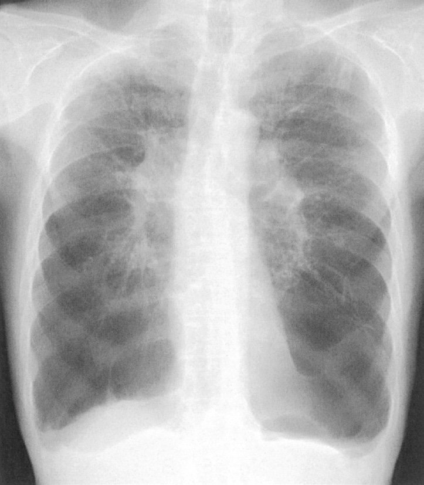
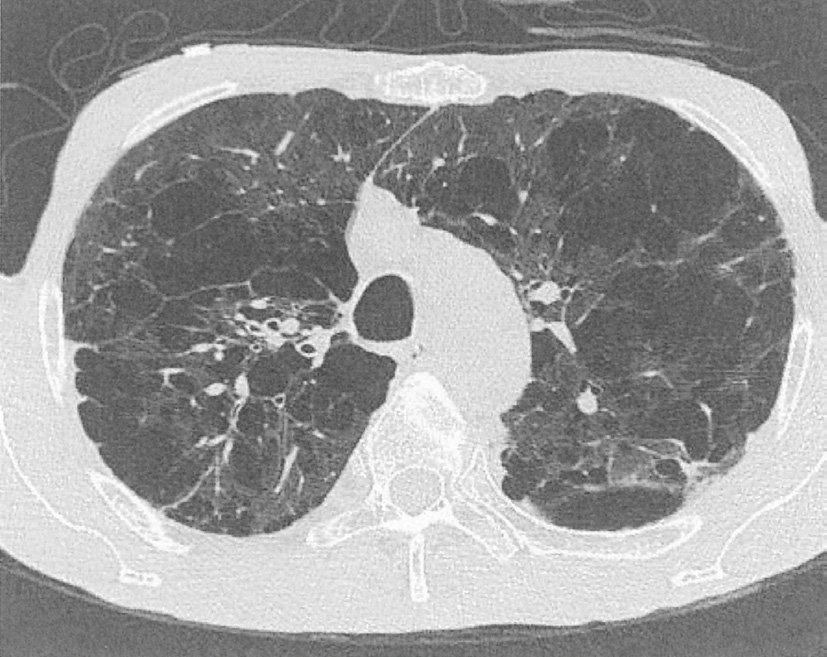
a 除脂肪体重は予後と関連する
b 高蛋白・高エネルギー食が望ましい
c 脂質の割合が高い栄養素配分が基本である
d 安静時エネルギー消費量は予測値より低下する
e 食事に伴う呼吸困難が食事摂取量減少の一因となる
✅ d 安静時エネルギー消費量は予測値より低下する（誤り：実際は増加）
理解度： ✅ わかった △ 迷った ❌ わからない
🫁 COPD患者のエネルギー代謝 COPD患者は：①呼吸筋仕事量↑（慢性呼吸努力）②全身性炎症（TNF-α等）→安静時エネルギー消費量（REE）は予測値より約15〜25%増加 。これが体重減少・筋肉量減少（サルコペニア）の原因。→ d の「低下」は誤り 。
🎯 国試ポイント COPD栄養管理：高エネルギー（≥35 kcal/kg/day） ・高蛋白 ・脂質中心（RQ=0.7） ・分食（1回量を減らす） 。除脂肪体重（FFM）低下は予後不良因子（a正）。
Q.151 (111D-45) 📷 画像 正答率 90% 正答率 90% 🚩 済
45歳男性、喘息＋茶褐色細長い粘稠な痰（mucus plug）。胸部X線(A,B)・CT(C)を示す（ABPA）。この疾患について誤っているのはどれか。
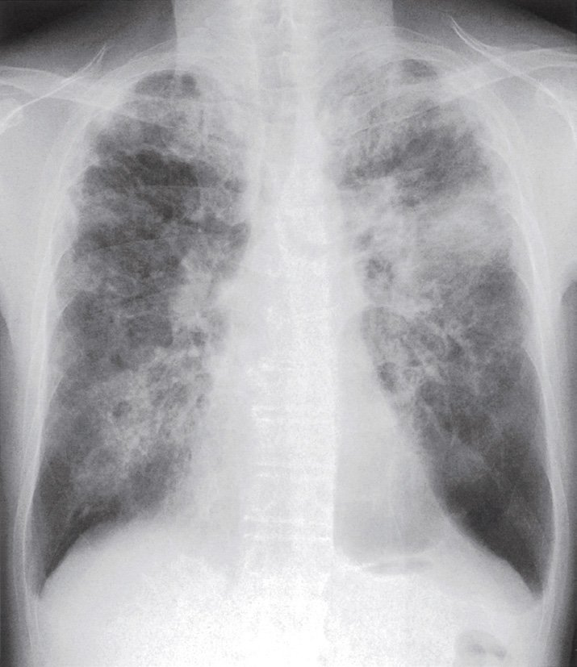
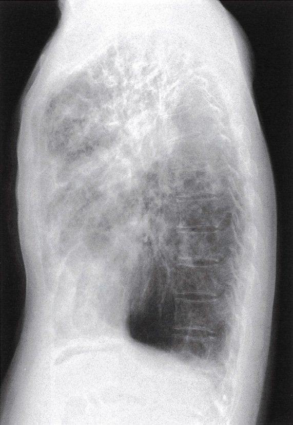
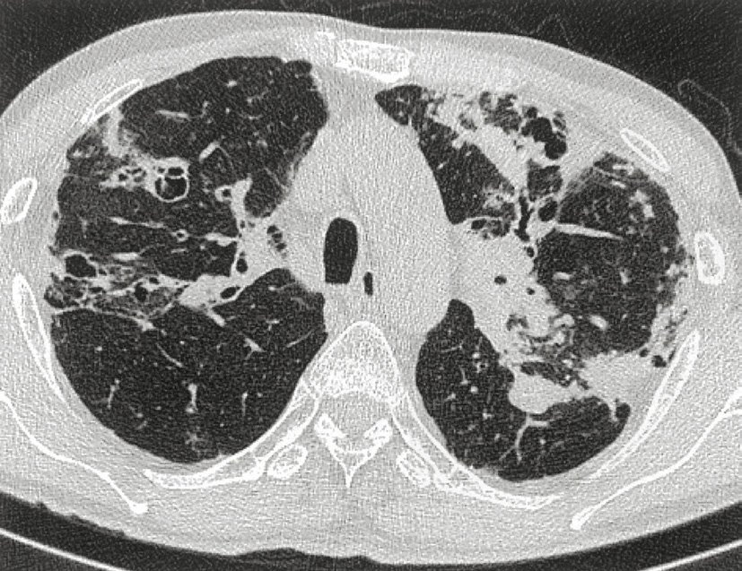
a 血清IgE値は高値を示す
b 末梢血で好酸球増多を示す
c 移動性の肺浸潤影を呈する
d 喀痰培養で抗酸菌が検出される
e 第一選択の治療薬は経口副腎皮質ステロイドである
✅ d 喀痰培養で抗酸菌が検出される（誤り：ABPAはAspergillus（真菌）が原因）
理解度： ✅ わかった △ 迷った ❌ わからない
📋 ABPA（アレルギー性気管支肺アスペルギルス症）まとめ 特徴 内容 病因 Aspergillus fumigatus（真菌） への過剰免疫反応（抗酸菌ではない→d誤）診断 IgE高値（a正）、好酸球増多（b正）、移動性浸潤影（c正）、沈降抗体陽性 CT所見 中枢型気管支拡張症、mucus plug（茶褐色粘稠痰） 治療 経口ステロイド＋イトラコナゾール（e正）
Q.152 (111G-22) 正答率 75% 正答率 75% 🚩 済
慢性咳嗽について正しいのはどれか。
a 慢性咳嗽とは4週間以上継続する咳である
b アトピー咳嗽には気管支拡張薬が有効である
c 降圧薬ではカルシウム拮抗薬が主な原因である
d 咳喘息にはプロトンポンプ阻害薬が有効である
e 副鼻腔気管支症候群にはマクロライド系抗菌薬が有効である
✅ e 副鼻腔気管支症候群にはマクロライド系抗菌薬が有効
理解度： ✅ わかった △ 迷った ❌ わからない
📋 慢性咳嗽の鑑別と治療 疾患 特徴 治療 副鼻腔気管支症候群 湿性咳嗽・後鼻漏・膿性痰 14員環マクロライド少量長期（e正） アトピー咳嗽 喉のイガイガ・乾性咳嗽 抗ヒスタミン薬・ICS（気管支拡張薬は無効→b誤） 咳喘息 夜間早朝の乾性咳嗽 ICS（PPIでなく→d誤） GERD性咳嗽 食後悪化 PPI（プロトンポンプ阻害薬） ACE阻害薬咳嗽 乾性咳嗽（降圧薬の副作用） ACE阻害薬中止（Ca拮抗薬ではない→c誤）
💡 慢性咳嗽の定義 日本：8週間以上 継続する咳嗽を慢性咳嗽と定義（a の「4週間以上」は誤り）。
Q.153 (111I-72) 📷 画像 正答率 88% 正答率 88% 🚩 済
57歳女性。口腔内白色病変（口蓋垂周辺）。綿棒で剥離可能。2年前からICS使用中（気管支喘息）。最も考えられるのはどれか。
a 白板症
b 扁平苔癬
c 単純ヘルペス
d 口腔カンジダ症
e アフタ性口内炎
✅ d 口腔カンジダ症（ICS使用中→局所免疫抑制→Candida）
理解度： ✅ わかった △ 迷った ❌ わからない
🎯 国試ポイント ICS（吸入ステロイド）→ 口腔カンジダ症 は最も重要な副作用。鑑別：白板症・扁平苔癬はこすっても剥離しない。予防：吸入後のうがい（必須指導） 、スペーサー使用。治療：フルコナゾール内服。
Q.154 (111I-73) 2択 正答率 72% 正答率 54% 🚩 済
26歳女性、気管支喘息急性増悪（夜間）。SpO₂ 89%（room air）。両側全肺野wheeze。酸素投与・静脈路確保済み。直ちに行うべき治療はどれか。2つ選べ。
a 抗菌薬点滴静注
b 副腎皮質ステロイド吸入
c アミノフィリン点滴静注
d 短時間作用性β₂刺激薬吸入
e ロイコトリエン受容体拮抗薬内服
✅ c アミノフィリン点滴静注 ＋ d SABA吸入
※ SABAが最優先。全身ステロイドは選択肢にないため、次にアミノフィリンが選ばれる。
理解度： ✅ わかった △ 迷った ❌ わからない
🫁 喘息急性増悪の治療順位 ①SABA（短時間作用型β₂刺激薬） 吸入（第一選択）→ ②全身ステロイド （選択肢にない）→ ③アミノフィリン点滴 （β₂刺激薬への反応不良時の追加）。 Q.155 (110A-29) 正答率 54% 正答率 72% 🚩 済
41歳女性、喘息急性増悪（夜間）。アスピリン喘息の既往（市販解熱薬で呼吸困難）。SpO₂ 88%（room air）。両側呼気時wheeze。酸素投与開始後、次に行うべき治療はどれか。
a 人工呼吸
b 非ステロイド性抗炎症薬（NSAIDs）投与
c 利尿薬投与
d 抗菌薬投与
e 副腎皮質ステロイド全身投与
✅ e 副腎皮質ステロイド全身投与（喘息急性増悪の標準治療）
理解度： ✅ わかった △ 迷った ❌ わからない
🎯 国試ポイント アスピリン喘息にNSAIDs（b）は禁忌 （最重要禁忌）。酸素投与後の次ステップ：SABA吸入 （選択肢なし）→全身ステロイド投与 。c：利尿薬は心不全向け。a：意識清明・会話可能な段階では過剰。
Q.156 (110A-40) 📷 画像 正答率 55% 正答率 55% 🚩 済
50歳男性、3年前から慢性咳嗽・膿性痰。喫煙歴なし。両側coarse crackles。喀痰培養：ムコイド型緑膿菌。CT：両側小葉中心性陰影（気管支拡張症パターン）。治療として適切なのはどれか。
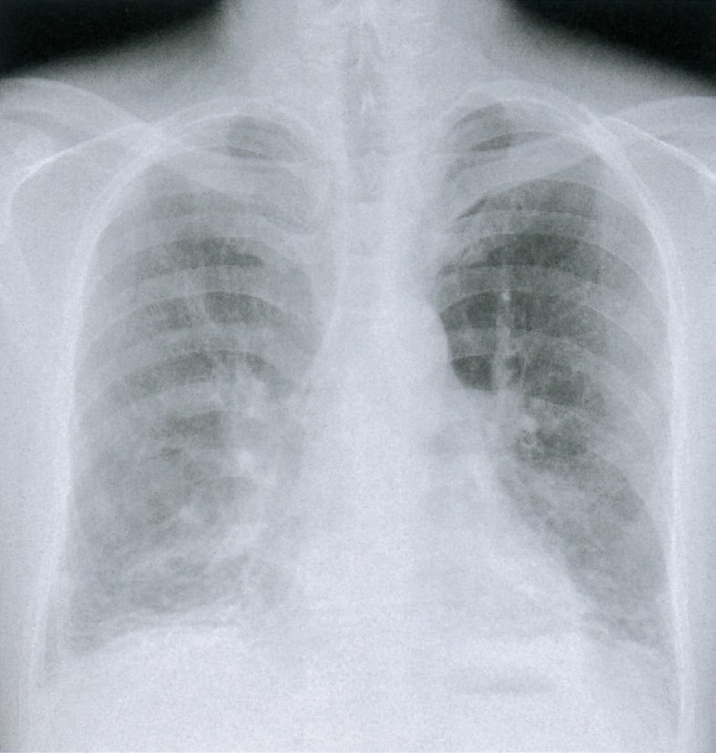
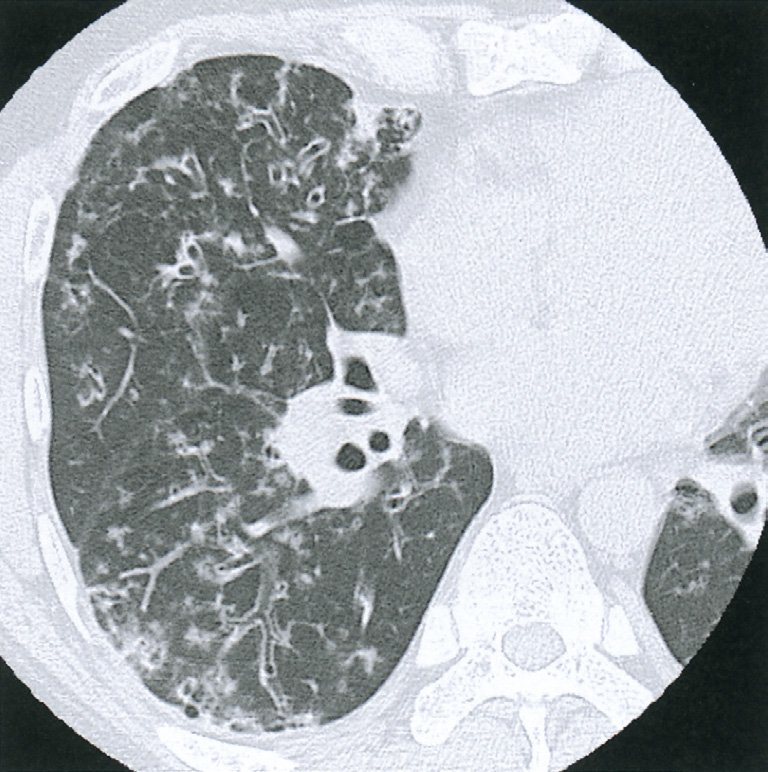
a β₂刺激薬の吸入
b 抗コリン薬の吸入
c 副腎皮質ステロイドの内服
d カルバペネム系薬の点滴静注
e 14員環マクロライド系薬の内服
✅ e 14員環マクロライド系薬の内服（気管支拡張症/DPBへの少量長期療法）
理解度： ✅ わかった △ 迷った ❌ わからない
🫁 気管支拡張症とマクロライド 喫煙歴なし＋慢性膿性痰＋coarse crackles＋CT小葉中心性陰影＋ムコイド型緑膿菌→気管支拡張症またはDPB （びまん性汎細気管支炎）。14員環マクロライド系薬（エリスロマイシン・クラリスロマイシン）の少量長期投与 →抗炎症・気道分泌物減少・抗菌（緑膿菌含む）効果。d：カルバペネムは急性感染期の強力な抗菌薬（安定期外来患者に点滴は過剰）。
📋
連問（Q.157〜158） 次の文を読み、157と158の問いに答えよ。 67歳女性、息苦しさを主訴に来院。
Q.157 (110C-28) 連問 正答率 99% 正答率 99% 🚩 済
この患者にみられる可能性が高いのはどれか。
a Cheyne-Stokes呼吸
b Kussmaul呼吸
c 口すぼめ呼吸
d Biot呼吸
e 下顎呼吸
✅ c 口すぼめ呼吸（pursed lip breathing）—COPDの特徴的呼吸パターン
理解度： ✅ わかった △ 迷った ❌ わからない
🎯 国試ポイント 口すぼめ呼吸 ：呼気時に口をすぼめて圧抵抗をかけることで気道内圧を高め、呼気時の末梢気道虚脱を防ぐ（intrinsic PEEPの自己形成）。COPD患者が自然に獲得する代償機構。Cheyne-Stokes（心不全・脳卒中） 、Kussmaul（代謝性アシドーシス） 、Biot（髄膜炎・脳圧↑）、下顎呼吸（瀕死）との鑑別。
Q.158 (110C-29) 連問 正答率 99% 正答率 99% 🚩 済
この患者の病状悪化とともに増加または上昇するのはどれか。
a 一秒量
b 残気量
c 肺拡散能
d 努力肺活量
e 動脈血酸素分圧
✅ b 残気量（air trapping→病状悪化と共にRV↑）
理解度： ✅ わかった △ 迷った ❌ わからない
📋 COPD悪化に伴う各指標の変化 指標 変化方向 理由 一秒量（FEV₁） ↓低下 閉塞性障害の進行 残気量（RV） ↑増加 空気トラッピング増大（正解） 肺拡散能（DLco） ↓低下 肺気腫の進行 努力肺活量（FVC） ↓低下 空気トラッピング→VCも低下 PaO₂ ↓低下 ガス交換障害の進行
Q.159 (110H-24) 正答率 98% 正答率 98% 🚩 済
32歳女性、夜間主体の咳嗽・呼吸困難（3ヶ月）。冷気・線香の煙で咳が誘発される。好酸球15%↑、IgE 280。呼気終末wheeze。胸部X線正常。最も考えられる疾患はどれか。
a 気管支喘息
b 過敏性肺炎
c 肺血栓塞栓症
d 副鼻腔気管支症候群
e びまん性汎細気管支炎
理解度： ✅ わかった △ 迷った ❌ わからない
💡 気管支喘息の診断ポイント ①夜間・早朝の悪化 ②可逆性の呼気時wheezes ③誘発因子（冷気・刺激物） ④好酸球↑・IgE↑ ⑤胸部X線正常 →典型的な気管支喘息。確定には気道過敏性試験またはスパイロメトリ（可逆性試験） が必要。
Q.160 (110I-25) 正答率 93% 正答率 93% 🚩 済
末梢血で好酸球増多を呈することが最も少ないのはどれか。
a 気管支喘息
b 気管支拡張症
c 慢性好酸球性肺炎
d アレルギー性肉芽腫性多発血管炎
e アレルギー性気管支肺アスペルギルス症
✅ b 気管支拡張症（細菌性炎症主体→好酸球増多は通常みられない）
理解度： ✅ わかった △ 迷った ❌ わからない
📋 疾患と好酸球増多 疾患 好酸球増多 備考 気管支喘息（a） あり アレルギー性炎症 気管支拡張症（b） 通常なし 細菌性気道感染が主体（b：最も少ない） 慢性好酸球性肺炎（c） 著明（>40%） 定義の一部 EGPA（d） 著明（>10%） 診断基準に好酸球増多 ABPA（e） あり（10〜50%） Aspergillusへの過剰IgE反応
Q.161 (110I-75) 2択 正答率 44%（難問） 正答率 44% 🚩 済
70歳女性、COPD（%FEV₁ 36%、FEV₁% 28%）。SpO₂ 95%（room air）。心エコー正常。この患者の増悪予防のために有用なのはどれか。2つ選べ。
a 酸素療法
b インフルエンザワクチン接種
c 長時間作用性β₂刺激薬の吸入
d 短時間作用性抗コリン薬の吸入
e 経口ペニシリン系薬の少量長期投与
✅ b インフルエンザワクチン接種 ＋ c LABA吸入（増悪予防エビデンスあり）
理解度： ✅ わかった △ 迷った ❌ わからない
📋 COPD増悪予防の手段 手段 エビデンス インフルエンザワクチン（b） ✅ Grade A（ウイルス性増悪の予防） LABA/LAMA吸入（c） ✅ 気管支拡張→増悪回数↓ 酸素療法（a） PaO₂≤55 or 60+合併症で適応（SpO₂ 95%では未達） SAMA（短時間作用性抗コリン）（d） 急性期の頓用→増悪予防エビデンス弱 経口ペニシリン（e） COPDへの少量長期→推奨なし（マクロライドが検討対象）
Q.162 (109A-4) 正答率 85% 正答率 85% 🚩 済
疾患と治療薬の組合せで適切なのはどれか。
a 気管支喘息 ——————————— β遮断薬
b 肺高血圧症 ——————————— 抗コリン薬
c マイコプラズマ肺炎 ———————— ペニシリン系抗菌薬
d ニューモシスチス肺炎 —————— 抗真菌薬
e アレルギー性気管支肺アスペルギルス症 ——— 副腎皮質ステロイド
理解度： ✅ わかった △ 迷った ❌ わからない
📋 誤肢解説 a：β遮断薬は喘息に禁忌 。b：抗コリン薬は肺高血圧症に適応なし（COPDのLAMA）。c：マイコプラズマは細胞壁がない→ペニシリン無効 →マクロライド系・テトラサイクリン・ニューキノロンが有効。d：ニューモシスチスは「真菌」様だがST合剤（抗菌薬） が第一選択（抗真菌薬ではない）。e：ABPA→経口ステロイド✓。
Q.163 (109A-59) 3択 📷 画像 正答率 19%（超難問） 正答率 19% 🚩 済
76歳男性、COPD急性増悪。BNP 89↑。JVD（頸静脈怒張）。両側wheeze+coarse crackles。ABG（NC2L/分）：pH 7.43、PaCO₂ 39、PaO₂ 64、HCO₃⁻ 25。CT(A,B,C)。まず行うべき治療はどれか。3つ選べ。
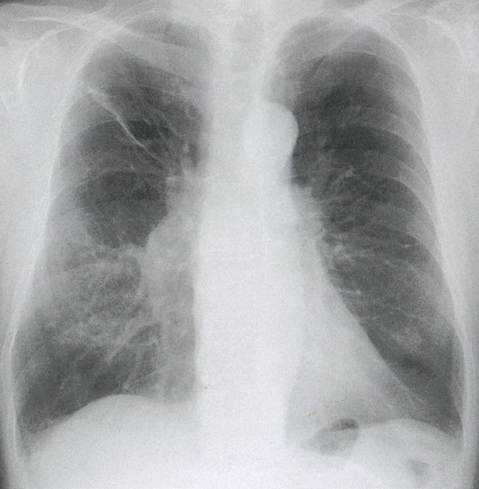
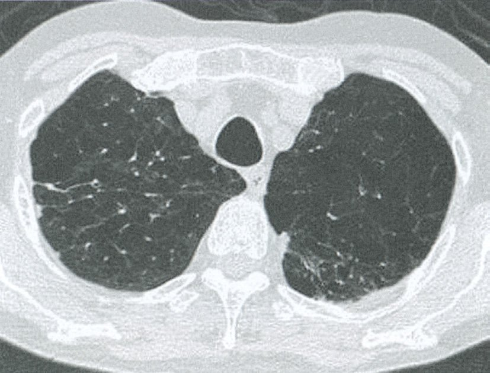
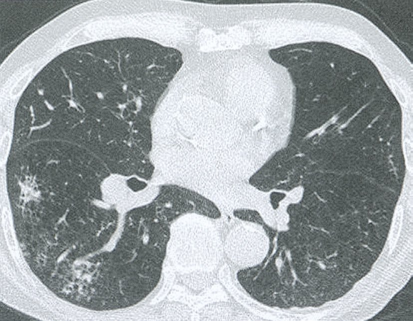
a 抗菌薬の投与
b 副腎皮質ステロイドの吸入
c 抗ロイコトリエン薬の投与
d 副腎皮質ステロイドの内服
e 短時間作用型β₂刺激薬の吸入
✅ a 抗菌薬 ＋ d 全身ステロイド内服 ＋ e SABA吸入
※ 正答率19%の超難問。BNP↑・JVDは急性肺性心（cor pulmonale）を示唆するが、基本治療はCOPD急性増悪の3本柱。
理解度： ✅ わかった △ 迷った ❌ わからない
🫁 COPD急性増悪の3本柱 ①SABA（e） ：気管支拡張、即効性 ②全身ステロイド（d内服） ：炎症抑制 ③抗菌薬（a） ：CRP 6.5・白血球12000→感染誘因あり。 Q.164 (109B-46) 正答率 98% 正答率 98% 🚩 済
70歳女性、慢性呼吸困難。喫煙20本/日×45年間。胸鎖乳突筋肥大・呼気延長・呼吸音減弱（副雑音なし）。最も考えられる疾患はどれか。
a 過敏性肺炎
b 気管支拡張症
c 肺血栓塞栓症
d 特発性肺線維症
e 慢性閉塞性肺疾患（COPD）
理解度： ✅ わかった △ 迷った ❌ わからない
💡 COPD診断のキーワード 喫煙歴 （45年間・20本）＋呼気延長 ＋呼吸音減弱 ＋補助呼吸筋使用（胸鎖乳突筋肥大） ＋副雑音なし→典型的COPD。IPFはfine cracklesが特徴。気管支拡張症はcoarse crackles。
Q.165 (108C-23) 正答率 86% 正答率 86% 🚩 済
43歳男性、感冒後に夜間・早朝の乾性咳嗽+喘鳴が4週間。胃潰瘍・高血圧でH2拮抗薬+Ca拮抗薬内服。両側wheeze。対応として適切なのはどれか。
a 利尿薬内服
b 降圧薬中止
c 抗菌薬内服
d 副腎皮質ステロイド吸入
e プロトンポンプ阻害薬内服
✅ d 副腎皮質ステロイド吸入（感冒後に発症した気管支喘息への維持療法）
理解度： ✅ わかった △ 迷った ❌ わからない
🫁 感冒後に発症した喘息の管理 感冒→気道炎症・過敏性亢進→気管支喘息 の発症or増悪。夜間・早朝の悪化・wheeze→喘息パターン。ICS吸入 が維持療法の中心。 Q.166 (108E-49) 📷 画像 正答率 81% 正答率 81% 🚩 済
66歳男性、COPD（肺野透過性亢進・両側鼓音）。胸部X線(A)・CT(B)・flow-volume曲線(C ①〜⑤)を示す。この患者に予想されるのはどれか。
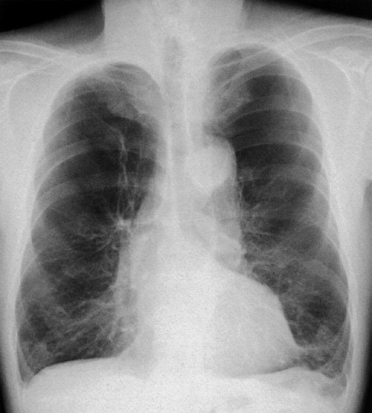
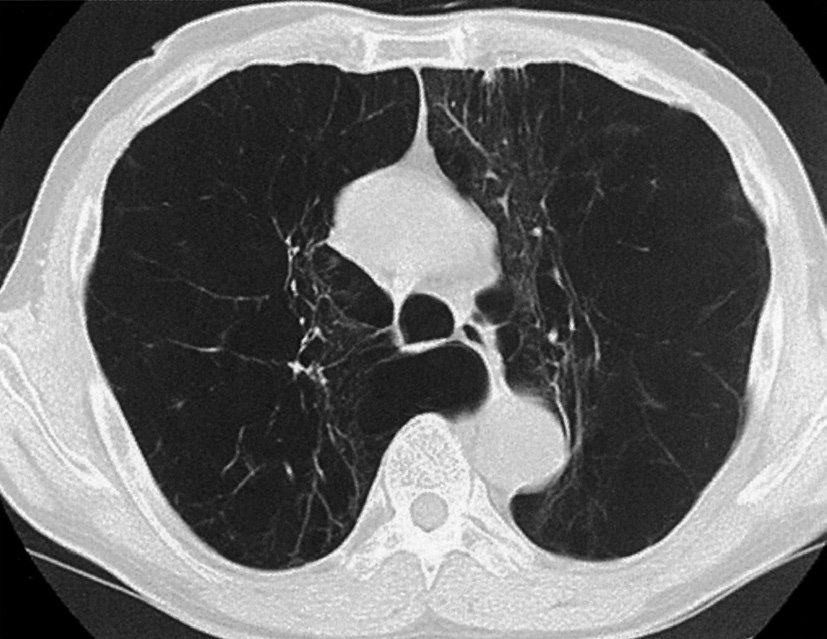
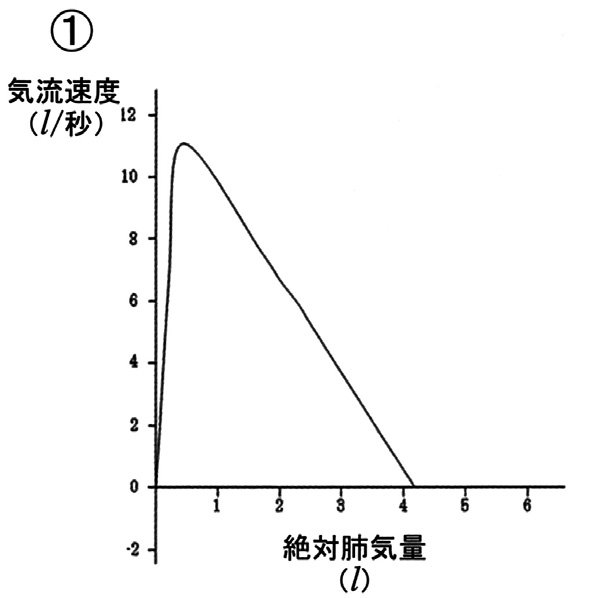
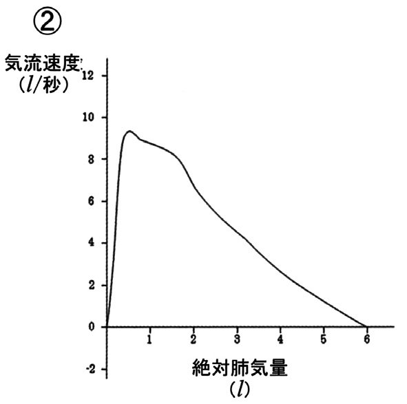
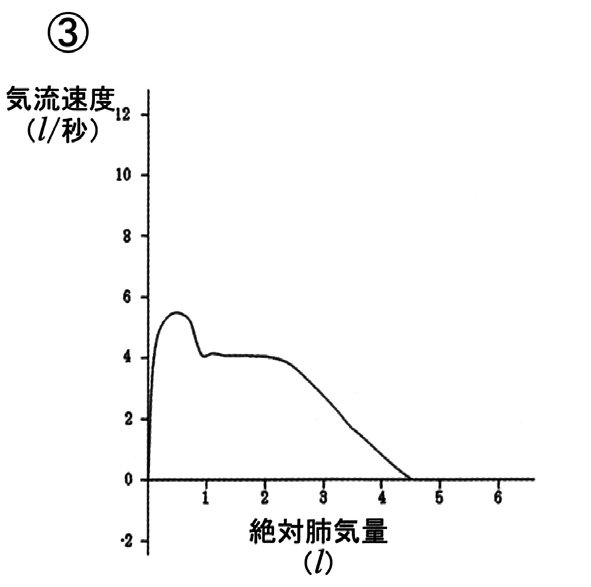
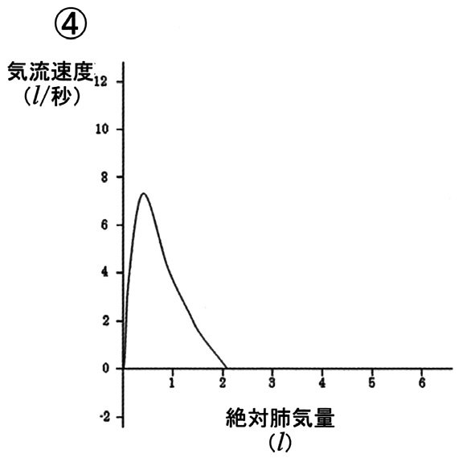
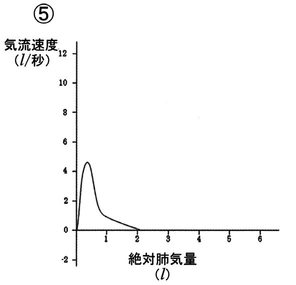
✅ e ⑤（COPD：呼気曲線がscoopingパターン）
理解度： ✅ わかった △ 迷った ❌ わからない
🫁 COPD flow-volume曲線パターン COPD（肺気腫型） のflow-volume曲線：呼気曲線が下方に凹（scooping pattern） 。RVが右方にシフト（全体のループが右に偏位）。ピークフローは比較的保たれるが中・低肺量域の呼気流速が著明に低下。③がこのパターンを示す（残りは拘束性・正常・可変性上気道閉塞等）。
Q.167 (108I-79) 📷 画像 2択 正答率 62% 正答率 62% 🚩 済
72歳男性、COPD急性増悪。SpO₂ 86%（room air）。JVD・胸郭膨隆。両側wheeze+coarse crackles。ABG（room air）：pH 7.29、PaCO₂ 65、PaO₂ 48。CT(A,B)。治療として適切なのはどれか。2つ選べ。
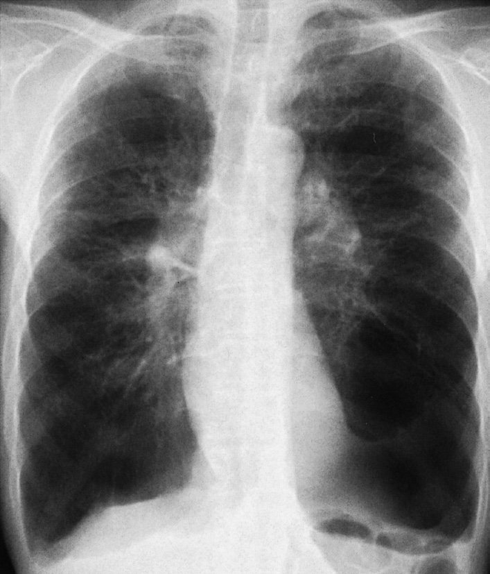
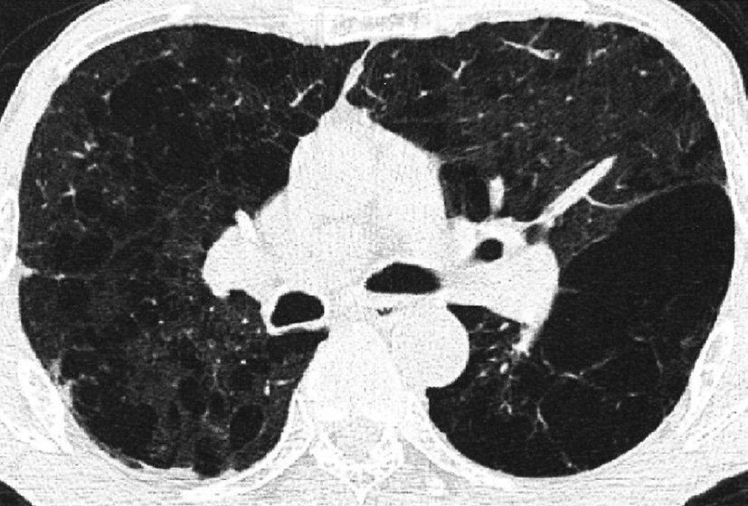
a 抗菌薬の投与
b 気管支肺胞洗浄
c 侵襲的人工換気
d 胸腔ドレナージ
e 気管支拡張薬の投与
✅ a 抗菌薬 ＋ e 気管支拡張薬（SABA/SAMA）
理解度： ✅ わかった △ 迷った ❌ わからない
🎯 国試ポイント COPD急性増悪の治療：a 抗菌薬（感染誘因）＋ e 気管支拡張薬（SABA/SAMA） ＋全身ステロイド（選択肢なし）＋NPPV （pH 7.29→NPPV適応だが選択肢なし）。b：BALは診断的手技。d：気胸なし。c：侵襲的人工換気はNIPPV失敗時の次の手段（ここでは最初の選択でない）。
Q.168 (107A-57) 📷 画像 2択 正答率 86% 正答率 86% 🚩 済
67歳男性、COPD急性増悪。SpO₂ 86%（room air）。JVD・肝腫大（3cm）→肺性心。ABG（room air）：pH 7.37、PaCO₂ 78、PaO₂ 56、HCO₃⁻ 44（代償性）。CT(A,B)。治療として適切なのはどれか。2つ選べ。
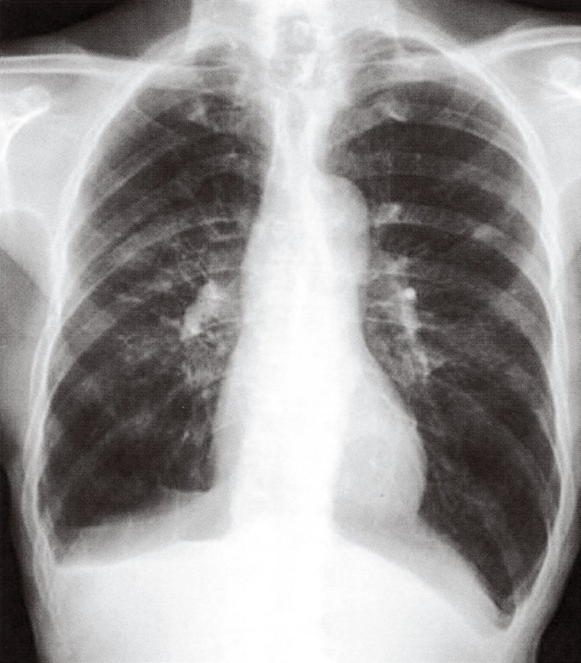
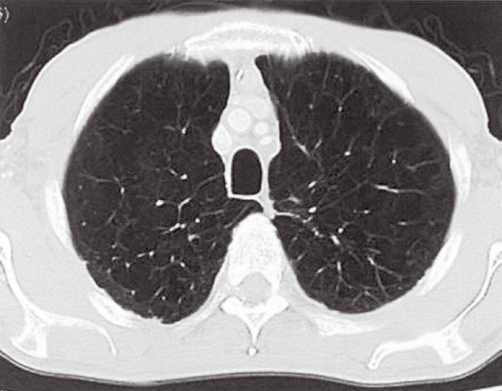
a 抗菌薬の投与
b 胸腔ドレナージ
c 免疫抑制薬投与
d 高濃度酸素投与
e 気管支拡張薬の投与
理解度： ✅ わかった △ 迷った ❌ わからない
🎯 国試ポイント d：高濃度酸素は禁忌 （PaCO₂ 78→重篤なII型呼吸不全→CO₂ narcosissリスク）。JVD・肝腫大=急性肺性心→NPPV （選択肢なし）+利尿薬も考慮。b：気胸なし。
📋
連問（Q.169〜170） 次の文を読み、169と170の問いに答えよ。 32歳女性、持続する咳嗽を主訴に来院。
Q.169 (107H-35) 連問 正答率 81% 正答率 81% 🚩 済
診断のために最も適切な検査はどれか。
a スパイロメトリー
b 心エコー検査
c 気管支鏡検査
d 胸部単純CT
e 喀痰培養
✅ a スパイロメトリー（気管支喘息の確定診断：可逆性試験）
理解度： ✅ わかった △ 迷った ❌ わからない
🎯 国試ポイント 夜間主体の咳嗽・強制呼出でwheeze・アトピー既往・ハムスター（アレルゲン）→気管支喘息疑い 。確定診断にはスパイロメトリ（気道可逆性試験＋気道過敏性試験） 。FEV₁%低下かつβ₂刺激薬吸入後に≥12%＆≥200mL改善→喘息確定。
Q.170 (107H-36) 連問 正答率 96% 正答率 96% 🚩 済
外来で通院治療中。市販の鎮痛薬を服用したところ約30分後に喘鳴・呼吸困難→受診。両側wheeze。直ちに行う処置はどれか。
a 硝酸薬の舌下投与
b β₂刺激薬の吸入
c 利尿薬の静注
d 抗菌薬の静注
e 気管挿管
理解度： ✅ わかった △ 迷った ❌ わからない
🎯 国試ポイント 市販鎮痛薬（NSAID）→アスピリン喘息の急性増悪発作。今後NSAIDs全般を禁忌 として指導が必要。急性発作への対処：SABAの吸入（β₂刺激薬） が最優先。意識清明・会話可能な段階→SABA→効果不十分なら全身ステロイド静注。